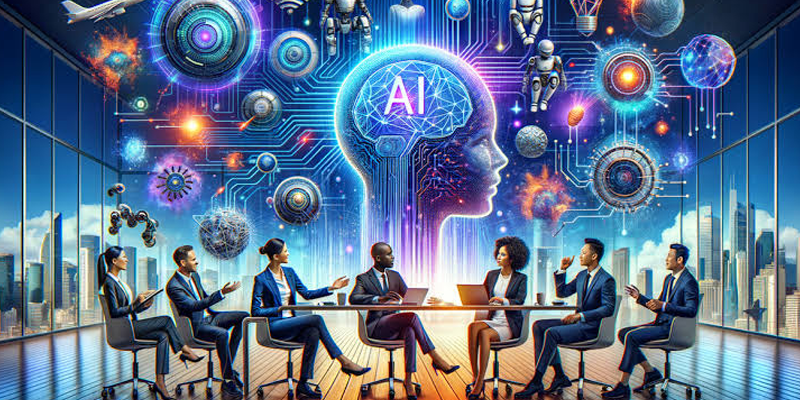

.jpeg)
AI Design Lab — ออกแบบงานให้สวยและสื่อสารได้
การออกแบบที่ดีไม่ได้หมายถึงการทำให้ภาพสวยเพียงอย่างเดียว แต่ต้องสามารถสื่อสารข้อมูลและสร้างความเข้าใจให้กับผู้ชมได้อย่างรวดเร็ว AI สามารถช่วยนักออกแบบและผู้ใช้งานทั่วไปตั้งแต่ขั้นตอนการคิด Concept ไปจนถึงการสร้างองค์ประกอบต่าง ๆ ของงาน AI สามารถช่วยเสนอแนวทางการเลือกสี ฟอนต์ รูปแบบการจัดวาง และสไตล์ของงานให้เหมาะกับวัตถุประสงค์ เช่น งานราชการอาจต้องการความเป็นทางการ งานการศึกษาอาจต้องการความเป็นมิตรและเข้าใจง่าย ส่วนงานโฆษณาอาจต้องการความโดดเด่นและดึงดูดสายตา การทำงานร่วมกันระหว่าง AI และมนุษย์จะช่วยให้กระบวนการออกแบบรวดเร็วขึ้น ผู้ใช้งานสามารถสร้าง

ต้นแบบหลายรูปแบบ แล้วเลือกแนวทางที่เหมาะสมที่สุดมาพัฒนาต่อ นอกจากงานภาพแล้ว AI ยังช่วยจัดโครงสร้างข้อมูลสำหรับ Infographic งาน Presentation และสื่อประชาสัมพันธ์ ทำให้ข้อมูลจำนวนมากสามารถถูกนำเสนอในรูปแบบที่เข้าใจง่ายและน่าสนใจมากขึ้น สิ่งที่จะได้เรียนรู้ หลักการออกแบบเบื้องต้น การเลือกสีและฟอนต์ การจัดองค์ประกอบ การสร้าง Infographic การออกแบบ Presentation การใช้ AI ช่วยสร้างต้นแบบงาน
back